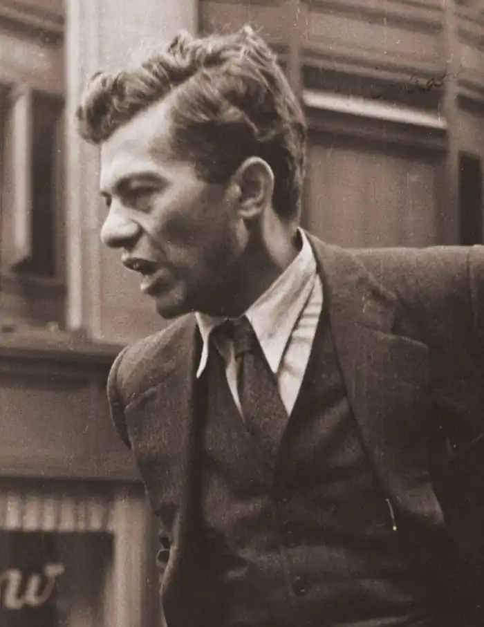

Майкл Голд (також Майк Голд, англ. Michael Gold; справжні ім'я та прізвище Іцик (Іцхок, Айзек) Гранич, 12 квітня 1894, Нью-Йорк — 14 травня 1967 Терра Інду, Каліфорнія) — американський письменник, критик і журналіст.
біографія
Іцик (Іцхок) Голд народився в родині єврейських емігрантів з Бессарабії на Нижньому Істсайді Манхеттена. Його батько — Хаїм Гран — був маляром, який залишився калікою в результаті падіння з будівельного риштування; після невдалої спроби зайнятися пошиттям чоловічих підтяжок, він був змушений підтримувати чотирьох дітей дріб'язкової вуличною торгівлею; мати — Гітл Шварц (в заміжжі Гран) — була домогосподаркою. У школі Голд змінив ім'я на Ірвінг (Irving), потім на більш американізоване Ірвін (Irwin), і тільки через кілька років після початку журналістської кар'єри — в 1921 році — взяв псевдонім Майкл Голд. Змінив багато професій. Брав участь в лівому політичному русі США. Літературну діяльність почав в 1916 році. Опублікував збірку оповідань і віршів "120 мільйонів" (1929), книгу "Євреї без грошей" (1930), автор збірки публіцистичних робіт "Змінимо світ!" (1936), збірка статей "Підлі люди" (1941), циклу віршів "Весна в Бронксі "(1952). Автобіографічний роман "Євреї без грошей" (1930), за життя автора перекладений на 14 мов, поклав початок "Американському пролетарському роману". Серед інших творів — перша монографія, присвячена творчості Давида Бурлюка "David Burliuk: artist-scholar, father of Russian futurism" (Давид Бурлюк: художник-дослідник, батько російського футуризму, 1944). Брат Майкла Голда — Макс (Менні) Гранич (1896-1987) — діяч комуністичної партії США.